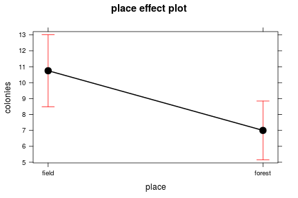
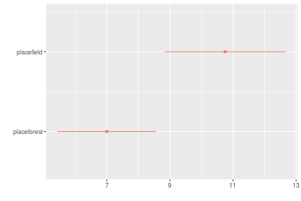
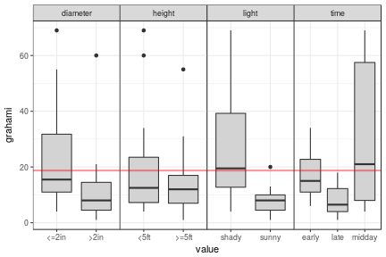
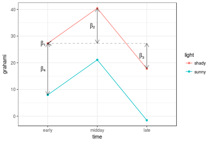
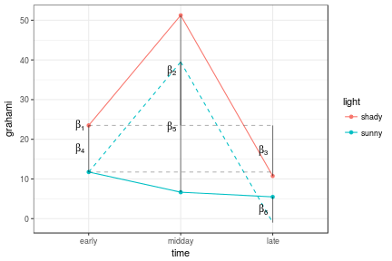
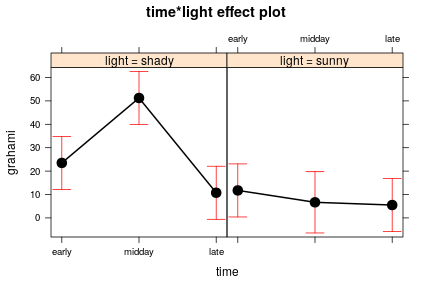

The previously explored ant-colony example:
Define data:
forest <- c(9, 6, 4, 6, 7, 10)
field <- c(12, 9, 12, 10)
ants <- data.frame(
place=rep(c("field","forest"),
c(length(field), length(forest))),
colonies=c(field,forest)
)
## utility function for pretty printing
pr <- function(m) printCoefmat(coef(summary(m)),
digits=3,signif.stars=FALSE)pr(lm1 <- lm(colonies~place,data=ants))## Estimate Std. Error t value Pr(>|t|)
## (Intercept) 10.75 0.98 10.97 4.2e-06
## placeforest -3.75 1.27 -2.96 0.018(Intercept) row refers to \(\beta_1\), which is the mean density in the “field” sites (“field” comes before “forest”).placeforest row indicates we are looking at the effect of forest level of the place variable, i.e. the difference between “forest” and “field” sites. (To know that “field” is the baseline level we must (1) remember, or look at levels(ants$place) or (2) notice which level is missing from the list of parameter estimates.)R’s behaviour may seem annoying at first – it seems like the estimated values of the groups are what we’re really interested in – but it is really designed for testing differences among groups. To get the estimates per group (what SAS calls LSMEANS), you could:
colonies~place-1, or equivalently colonies~place+0, to suppress the implicit intercept term:## Estimate Std. Error t value Pr(>|t|)
## placefield 10.75 0.98 10.97 4.2e-06
## placeforest 7.00 0.80 8.75 2.3e-05When you use the colonies~place-1 formula, the meanings of the parameters change: \(\beta_1\) is the same (mean of “field”), but \(\beta_2\) is ‘mean of “field”’ rather than (“(field)-(forest)”).
predict function:predict(lm1,newdata=data.frame(place=c("field","forest")),
interval="confidence")effects package:library("effects")
summary(allEffects(lm1))lsmeans package:library("lsmeans")
lsmeans(lm1,specs=~place)Graphical summaries:
plot(allEffects(lm1))
or
library("dotwhisker")## Loading required package: ggplot2## Loading required package: gridExtra## Loading required package: gtabledwplot(lm0)
Some data on lizard perching behaviour (brglm package; Schoener 1970 Ecology 51:408-418). (Ignore the fact that these are proportions/GLM would be better …)
lizards <- read.csv("data/lizards.csv")Response is number of Anolis grahami lizards found on perches in particular conditions.

Start with the time variable.
If we leave the factors alphabetical then \(\beta_1\)=“early”, \(\beta_2\)=“late”-“early”, \(\beta_3\)=“midday”-“early”. Change the order of the levels:
lizards <- mutate(lizards,
time=factor(time,
levels=c("early","midday","late")))This just swaps the definitions of \(\beta_2\) and \(\beta_3\).
We could also use sum-to-zero contrasts:
pr(lm(grahami~time,data=lizards,contrasts=list(time=contr.sum)))## Estimate Std. Error t value Pr(>|t|)
## (Intercept) 19.30 3.53 5.47 2.4e-05
## time1 -1.67 4.93 -0.34 0.74
## time2 12.85 5.10 2.52 0.02Now the (Intercept) parameter is the overall mean: time1 and time2 are the deviations of the first (“early”) and second (“midday”) groups from the overall mean. (See also car::contr.Sum.)
There are other ways to change the contrasts (i.e., use the contrasts() function to change the contrasts for a particular variable permanently, or use options(contrasts=c("contr.sum","contr.poly"))) to change the contrasts for all variables), but this way may be the most transparent.
There are other options for contrasts such as MASS::contr.sdif(), which gives the successive differences between levels.
library("MASS")
pr(lm(grahami~time,data=lizards,contrasts=list(time=contr.sdif)))## Estimate Std. Error t value Pr(>|t|)
## (Intercept) 19.30 3.53 5.47 2.4e-05
## time2-1 14.52 8.74 1.66 0.112
## time3-2 -24.02 8.74 -2.75 0.012You might have particular contrasts in mind (e.g. “control” vs. all other treatments, then “low” vs “high” within treatments), in which case it is probably worth learning how to set contrasts. (We will talk about testing all pairwise differences later, when we discuss multiple comparisons. This approach is probably not as useful as it is common.)
Consider the light variable in addition to time.
pr(lmTL1 <- lm(grahami~time+light,data=lizards))## Estimate Std. Error t value Pr(>|t|)
## (Intercept) 27.29 5.63 4.85 0.00011
## timemidday 13.14 7.11 1.85 0.08010
## timelate -9.50 6.85 -1.39 0.18174
## lightsunny -19.32 5.73 -3.37 0.00321\(\beta_1\) is the intercept (“early”,“sunny”); \(\beta_2\) and \(\beta_3\) are the differences from the baseline level (“early”) of the first variable (time) in the baseline level of the other parameter(s) (light=“shady”); \(\beta_4\) is the difference from the baseline level (“sunny”) of the second variable (light) in the baseline level of time (“early”).
## Loading required package: grid
pr(lmTL2 <- lm(grahami~time*light,data=lizards))## Estimate Std. Error t value Pr(>|t|)
## (Intercept) 23.50 5.38 4.37 0.00042
## timemidday 27.75 7.60 3.65 0.00198
## timelate -12.75 7.60 -1.68 0.11180
## lightsunny -11.75 7.60 -1.55 0.14061
## timemidday:lightsunny -32.83 11.19 -2.93 0.00927
## timelate:lightsunny 6.50 10.75 0.60 0.55343Parameters \(\beta_1\) to \(\beta_4\) have the same meanings as before. Now we also have \(\beta_5\) and \(\beta_6\), labelled “timemidday:lightsunny” and “timelate:lightsunny”, which describe the difference between the expected mean value of these treatment combinations based on the additive model (which are \(\beta_1 + \beta_2 + \beta_4\) and \(\beta_1 + \beta_3 + \beta_4\) respectively) and their actual values.

The fits are easy:
pr(lmTL1S <- update(lmTL1,contrasts=list(time=contr.sum,light=contr.sum)))## Estimate Std. Error t value Pr(>|t|)
## (Intercept) 18.84 2.87 6.57 2.7e-06
## time1 -1.21 4.01 -0.30 0.7654
## time2 11.92 4.15 2.87 0.0097
## light1 9.66 2.87 3.37 0.0032pr(lmTL2S <- update(lmTL2,contrasts=list(time=contr.sum,light=contr.sum)))## Estimate Std. Error t value Pr(>|t|)
## (Intercept) 18.236 2.255 8.09 3.1e-07
## time1 -0.611 3.146 -0.19 0.84830
## time2 10.722 3.271 3.28 0.00444
## light1 10.264 2.255 4.55 0.00028
## time1:light1 -4.389 3.146 -1.39 0.18100
## time2:light1 12.028 3.271 3.68 0.00187(The intercept doesn’t stay exactly the same when we add the interaction because the data are unbalanced: try with(lizards,table(light,time)))
I didn’t do the pictures.
dwplot(list(additive=lmTL1,interaction=lmTL2))+
geom_vline(xintercept=0,lty=2)
plot(allEffects(lmTL2))
Session info:
sessionInfo()## R version 3.3.2 (2016-10-31)
## Platform: x86_64-pc-linux-gnu (64-bit)
## Running under: Ubuntu 16.04.2 LTS
##
## locale:
## [1] LC_CTYPE=en_CA.UTF-8 LC_NUMERIC=C
## [3] LC_TIME=en_CA.UTF-8 LC_COLLATE=en_CA.UTF-8
## [5] LC_MONETARY=en_CA.UTF-8 LC_MESSAGES=en_CA.UTF-8
## [7] LC_PAPER=en_CA.UTF-8 LC_NAME=C
## [9] LC_ADDRESS=C LC_TELEPHONE=C
## [11] LC_MEASUREMENT=en_CA.UTF-8 LC_IDENTIFICATION=C
##
## attached base packages:
## [1] grid stats graphics grDevices utils datasets methods
## [8] base
##
## other attached packages:
## [1] MASS_7.3-45 dplyr_0.5.0 tidyr_0.6.0 dotwhisker_0.2.3
## [5] gtable_0.2.0 gridExtra_2.2.1 ggplot2_2.2.0 lsmeans_2.25
## [9] estimability_1.2 effects_3.1-2 knitr_1.15.1
##
## loaded via a namespace (and not attached):
## [1] Rcpp_0.12.8 nloptr_1.0.4 plyr_1.8.4 highr_0.6
## [5] tools_3.3.2 digest_0.6.10 lme4_1.1-12 evaluate_0.10
## [9] tibble_1.2 nlme_3.1-129 lattice_0.20-34 psych_1.6.9
## [13] Matrix_1.2-7.1 DBI_0.5-1 parallel_3.3.2 mvtnorm_1.0-5
## [17] coda_0.19-1 stringr_1.1.0 nnet_7.3-12 R6_2.2.0
## [21] survival_2.40-1 foreign_0.8-67 multcomp_1.4-6 TH.data_1.0-7
## [25] minqa_1.2.4 reshape2_1.4.2 magrittr_1.5 scales_0.4.1
## [29] codetools_0.2-15 splines_3.3.2 mnormt_1.5-5 assertthat_0.1
## [33] colorspace_1.3-2 xtable_1.8-2 labeling_0.3 sandwich_2.3-4
## [37] stringi_1.1.2 lazyeval_0.2.0 munsell_0.4.3 broom_0.4.1
## [41] zoo_1.7-14Other refs - http://sas-and-r.blogspot.com/2010/10/example-89-contrasts.html - gmodels::fit.contrast() (show parameter estimates based on re-fitting models with new contrasts), rms::contrast.rms() (ditto, for rms-based fits) - http://www.ats.ucla.edu/stat/r/library/contrast_coding.htm - Crawley Statistical Computing: An Introduction to Data Analysis using S-PLUS, chapter 18